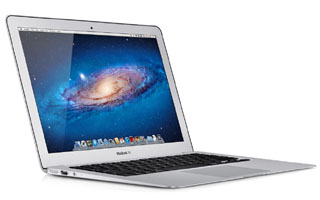

Macbook Air
Apple's often imitated but never bettered ultra-portable laptop puts in a strong, though not faultless, performance with this mid-2013 release, the sixth-generation of the MacBook Air. It offers significant improvements in its solid state storage speed, graphical power, battery life and wireless capabilities, but the processor's clock speeds actually take a backward step. But as we'll see, for most real-world applications, the MacBook Air 2013 matches or out-performs its predecessor.
 Launched last October, Apple's 2013 MacBook Pro with Retina was in many ways a classic follow-up from the Cupertino-based company. Lighter, thinner and faster than the previous generation's models, it made improvements in key areas while keeping the same pixel-packing display that made the original a hit.
Measuring almost half an inch thinner than its predecessor and weighing 0.11 pounds lighter, it brought a new level of portability to Apple's traditionally weightier and chunkier laptop line.
Launched last October, Apple's 2013 MacBook Pro with Retina was in many ways a classic follow-up from the Cupertino-based company. Lighter, thinner and faster than the previous generation's models, it made improvements in key areas while keeping the same pixel-packing display that made the original a hit.
Measuring almost half an inch thinner than its predecessor and weighing 0.11 pounds lighter, it brought a new level of portability to Apple's traditionally weightier and chunkier laptop line.